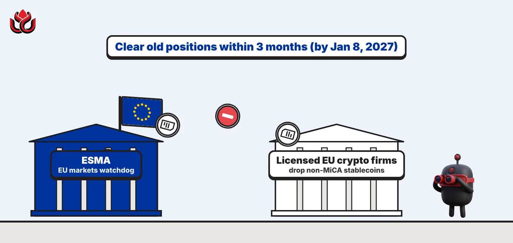
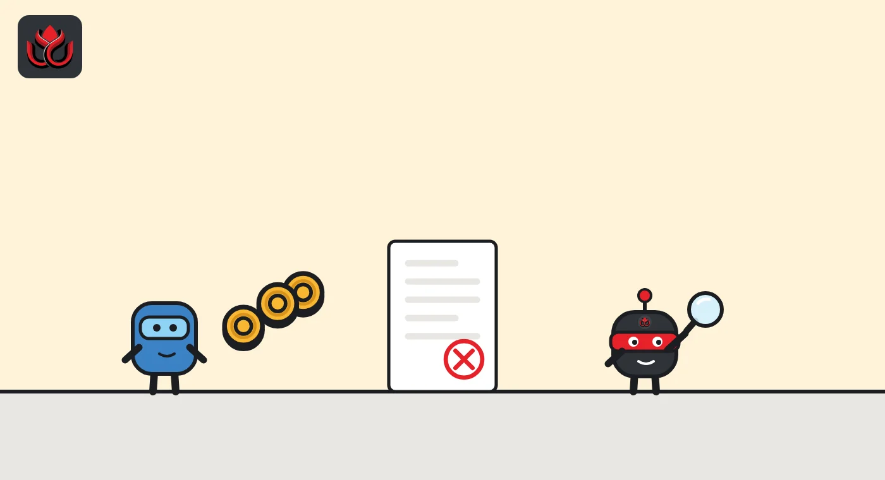
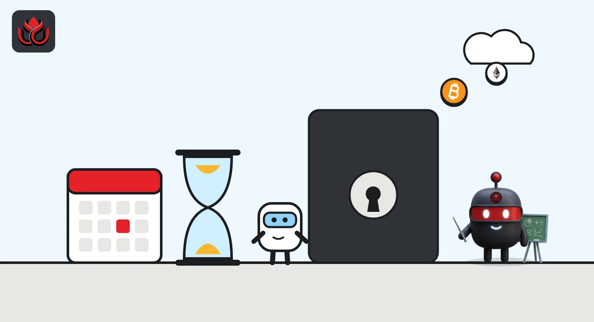

Out by January 8? ESMA tells EU crypto firms to drop non-MiCA stablecoins
The EU's markets watchdog says licensed crypto firms should stop offering stablecoins that break MiCA rules and clear old client positions within three months. Warning customers is not enough.

Key points
- ESMA said on October 8, 2026, that MiCA-licensed crypto firms should not offer services in stablecoins that fail MiCA's rules.
- Old client positions should be cleared within three months, which by our count means by January 8, 2027. Only selling, converting, withdrawing, transferring or holding is allowed in the meantime.
- Risk warnings do not count as a fix, and ESMA named no specific tokens.
What ESMA said
Licensed crypto firms in the EU should stop offering stablecoins that do not meet MiCA rules and clear old client positions within three months, the European Securities and Markets Authority (ESMA) said on October 8, 2026. By our count, that deadline falls on January 8, 2027. ESMA published an opinion on October 8, 2026, aimed at crypto-asset service providers (CASPs), the exchanges, brokers and custodians licensed under the EU's Markets in Crypto-Assets Regulation (MiCA).
The message is short. If a stablecoin does not meet MiCA's conditions for a lawful public offer or admission to trading, licensed firms should not offer services in it to EU clients. That covers both types of stablecoin in MiCA: asset-referenced tokens (ARTs), which track a basket of assets, and e-money tokens (EMTs), which track a single official currency.
The opinion is addressed to national competent authorities, the country-level regulators who license and supervise CASPs. ESMA issued it under Article 29(1)(a) of its founding regulation, which lets it push for consistent supervision across the EU.
Which services are caught
The scope is wide. According to the ESMA press release, the expectation applies across the full list of MiCA services, whether offered alone or together:
- operating a trading platform and exchanging crypto for cash or other crypto
- executing, receiving and transmitting orders, and placing
- investment advice and portfolio management
- transfer services, plus custody and administration
ESMA's legal hook is Article 66(1) of MiCA, which requires CASPs to act honestly, fairly and professionally. ESMA presumes that offering any of these services in a non-compliant stablecoin clashes with that duty.
Firms cannot get around this with paperwork. ESMA said warnings and client disclosures do not deal with the risk. Firms are expected to have technical, contractual and organizational controls in place, including blocks that stop clients buying new tokens or adding to positions.

The three-month clock
Where national regulators find clients still holding exposures from before, they should require firms to fix this as soon as possible and no later than three months after the opinion was published. Counting from October 8, that points to January 8, 2027.
During the wind-down, regulators may allow a narrow set of services so clients are not trapped: liquidation, conversion, withdrawal, transfer or safekeeping of the tokens they already hold. For legacy positions, that means sell-only, conversion, transfer or withdrawal functions. These services must not be used for new purchases, promotion or trading. ESMA said they should be "time-limited, clearly communicated to clients and subject to close supervisory scrutiny."
The opinion also explains why ESMA thinks this is needed. A licensed firm that keeps offering a non-compliant stablecoin would knowingly expose clients to risks that MiCA's issuer rules are meant to remove, such as weak reserve or redemption safeguards. ESMA says this holds whether or not the service itself counts as a public offer or an admission to trading.
Timeline
ESMA publishes its opinion on services in non-MiCA-compliant ARTs and EMTs
EBA classifies USDC as the EU's first significant e-money token
EBA direct supervision of USDC's reserves and capital begins
Three months after publication, the deadline for clearing legacy client exposures

How it fits with the USDC decision
The opinion builds on earlier work. ESMA said it follows European Commission Q&A 2404 and an earlier ESMA public statement, which explained when a firm's services can count as an offer to the public or an admission to trading. ESMA said the new opinion complements that guidance and does not change the earlier position. What it adds is clarity on the firms' own conduct duties.
It also landed in a week of big stablecoin decisions in the EU. Six days later, on October 14, 2026, the European Banking Authority classified Circle's USDC as the first significant e-money token under MiCA. The EBA said 45 e-money tokens have been notified in the EU so far. From November 12, 2026, the EBA takes over direct supervision of USDC's own funds, reserve of assets, liquidity and recovery plans from France's ACPR, which keeps oversight of areas such as governance.
The two moves point in the same direction. Stablecoins that meet MiCA's rules face closer supervision, and those that do not are being pushed off licensed EU platforms.
Which tokens are affected?
The opinion names no tokens and no issuers. It speaks only of categories. Each firm will need to check, token by token, against MiCA's authorization records and issuer notifications, whether the conditions for a lawful offer to the public or admission to trading are met, including whether any exemption or transitional arrangement applies.
An opinion under Article 29 is a supervisory tool, not new legislation. It tells national regulators how ESMA expects MiCA to be applied, and it does not change the EBA's role over stablecoin issuers. ESMA said it will work with national regulators to monitor how quickly the opinion is applied.
LC Insight analysis
This section is our reading of the facts above, not a statement of fact.
- The line that matters most is the rejection of warnings. Any platform hoping to keep non-compliant stablecoins listed with a risk label now has its answer: that does not meet the duty to act honestly, fairly and professionally.
- We expect EU order books for unlicensed dollar stablecoins to thin out by early 2027, with euro and licensed dollar tokens taking their trading pairs. The speed will depend on how strict each national regulator is.
- Because this is supervisory guidance, not a new law, enforcement could vary between countries at first. If big gaps appear, we expect ESMA to step in again.
What's next
- Notices from major EU-licensed exchanges about delisting or restricting stablecoin pairs before January 8, 2027
- Statements from national regulators such as France's AMF or Germany's BaFin on how they will apply the opinion
- Any move by large unlicensed issuers to seek MiCA authorization
Disclaimer. This article is based on public information and the sources listed below as of the update time shown. It is for information only and is not investment, legal or tax advice. Figures may change as companies and authorities publish new data.
Sources
- ESMA, Opinion on the provision of crypto-asset services in relation to non-MiCA-compliant ARTs and EMTs, ESMA75-113276571-1742 (October 8, 2026)
- ESMA, ESMA sets out supervisory expectations on services related to unauthorised stablecoins (October 8, 2026)
- European Banking Authority, EBA classifies USDC as the first significant e-money token (October 14, 2026)